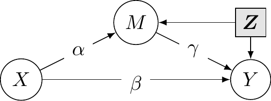

Linear mediation model
Consider linear regression models in a system where some response \(Y\) depends on a mediator is \(M\) and an experimental factor is \(X\). We consider estimation of linear mediation models of the form \[\begin{align*} M \mid X, \boldsymbol{Z}_M &= c_M + \alpha X + \boldsymbol{Z}_M^\top\boldsymbol{\delta} + \varepsilon_M\\ Y \mid M, X, \boldsymbol{Z}_Y&= c_Y + \beta X + \gamma M + \boldsymbol{Z}_Y^\top\boldsymbol{\omega} + \varepsilon_Y, \end{align*}\] where \(\boldsymbol{Z}_M\) (respectively \(\boldsymbol{Z}_Y\)) are explanatory variables for the mediator \(M\) (response \(Y\)).
The total effect of \(X\) on \(Y\) is \(\beta + \alpha \gamma\).
The average causal mediation effect (ACME) or natural indirect effect for treatment at level \(t\) is obtained by changing the potential outcome for the mediator while fixing the treatment level, so \[\begin{align*} \mathsf{E}[Y_i\{t, M_i(1)\} - Y_i\{t, M_i(0)\}]. \end{align*}\]
The set of control covariates for the first model \(\boldsymbol{Z}_M\) and \(\boldsymbol{Z}_Y\), need not be the same. In a randomized experiment, there is no need to include any control lest we mistakenly create correlation by including colliders.
Example 1
We consider an example from Experiment 1 of Bastian et al. (2014), who experienced the effect of the effect of shared pain (through a manipulation) on bonding.
This effect of pain remained when controlling for age (p = .048), gender (p = .052), and group size (p = .050). None of these variables were significantly correlated with experimental condition (ps > .136) or perceived bonding (ps > .925). To determine whether the marginal tendency for the pain tasks to be viewed as more threatening than the control tasks mediated the effect of pain on perceived bonding, we conducted a bootstrap analysis (Preacher & Hayes, 2008) using 5,000 resamples. The results of this analysis revealed that threat was not a significant mediator, indirect effect = −0.11, SE = 0.09, 95% CI = [−0.34, 0.03].
There are several problems with the description: while it seems that some covariate (age, gender, group size) were added to regression models, it is unclear whether they could be confounders, whether their effect is linear and in which (if any model they are included). Stating “bootstrap analysis” is the equivalent of “running a statistical test”: so vague it could mean anything, and the fact the output is random does not help with reproducibility.
The response variable \(Y\) is bonding, the experimental factor condition and threat, the average ALES subscale about the perception of the physical task, is the postulated mediator.
We use the mediation package (Tingley et al., 2014) for the model; the package certainly isn’t needed (nor the PROCESS macros) to run the bootstrap, which we could obtain with a single for-loop. However, it has utilities, notably for checking model assumptions, that are convenient.
Code
library(mediation, quietly = TRUE)
data(BJF14_S1, package = "hecedsm")
MsX <- lm(threat ~ condition +
gender + groupsize + age,
data = BJF14_S1)
YsXM <- lm(bonding ~ threat +
gender + groupsize + age +
condition,
data = BJF14_S1)
|
|
Both of the threat and bonding measures are average of Likert scales. We include the controls in the regression for the response to account for potential confounding between threat level and shared bonding: it is unclear whether the authors used the control covariates or whether these make sense.
Code
set.seed(80667)
linmed <- mediate(
model.m = MsX,
model.y = YsXM,
sims = 1000L, # number of bootstrap sim
boot = TRUE, # use bootstrap
boot.ci.type = "perc", #percentile bootstrap
mediator = "threat", #name of mediator
treat = "condition", #name of treatment
control.value = "Control", # name of control level
treat.value = "Pain")
summary(linmed)
Causal Mediation Analysis
Nonparametric Bootstrap Confidence Intervals with the Percentile Method
Estimate 95% CI Lower 95% CI Upper p-value
ACME -0.0714 -0.3631 0.15 0.548
ADE 0.6598 -0.0117 1.26 0.056 .
Total Effect 0.5884 0.0123 1.14 0.048 *
Prop. Mediated -0.1213 -1.5011 0.62 0.564
---
Signif. codes: 0 '***' 0.001 '**' 0.01 '*' 0.05 '.' 0.1 ' ' 1
Sample Size Used: 54
Simulations: 1000 The first line gives the average reverse natural indirect effect or average conditional mediated effect (labelled ACME), the second the average direct effect and the third the total effect. The point estimate for the indirect effect is \(\alpha\gamma\) or rcoef(YsXM)[‘threat’] * coef(MsX)[‘conditionPain’]` which is -0.07. The bootstrap sampling distribution is skewed to the left, which is reflected in the asymmetry of the percentile confidence interval.

The sequential ignorability assumption cannot be verified, but we can see what impacts violations would have on the coefficients: the expected value of the (least square) coefficient \(\widehat{\gamma}\) is \(\gamma + \mathsf{Co}(\varepsilon_1, \varepsilon_3)/\mathsf{Va}(\varepsilon_1)\) (Bullock et al., 2010). The variance of the error of the mediation can be estimated and we can vary the correlation due to confounding.
Code
linmed_sensitivity <- medsens(linmed)
summary(linmed_sensitivity)
Mediation Sensitivity Analysis for Average Causal Mediation Effect
Sensitivity Region
Rho ACME 95% CI Lower 95% CI Upper R^2_M*R^2_Y* R^2_M~R^2_Y~
[1,] -0.4 0.2533 -0.0236 0.5302 0.16 0.1144
[2,] -0.3 0.1626 -0.0723 0.3975 0.09 0.0644
[3,] -0.2 0.0805 -0.1288 0.2898 0.04 0.0286
[4,] -0.1 0.0034 -0.1969 0.2037 0.01 0.0072
[5,] 0.0 -0.0714 -0.2788 0.1360 0.00 0.0000
[6,] 0.1 -0.1462 -0.3748 0.0825 0.01 0.0072
[7,] 0.2 -0.2233 -0.4850 0.0385 0.04 0.0286
Rho at which ACME = 0: -0.1
R^2_M*R^2_Y* at which ACME = 0: 0.01
R^2_M~R^2_Y~ at which ACME = 0: 0.0072 Code
plot(linmed_sensitivity)The medsens function implements the sensitivity diagnostic presented in Section 5.1 of Imai et al. (2010) for the linear mediation model. By default, the correlation \(\rho\) varies in 0.1 increments.
We can see the wide range of the ACME if there was correlation between residuals from the mediation and the response model, highlighting the wide range of values that could be returned: the ACME could go from \(0.2\) to \(-0.288\) for correlations in the range \(\rho \in [-0.4, 0.4]\). In this example, nearly any correlation in this range would lead to “insignificant results”, mostly because of the small sample size. In a situation where we had found a significant (sic) result, we could observe how much correlation would be needed for this effect to be an artefact of correlation and vanish.
According to the documentation of the medsens function (?medsens), there are two variants of the estimated effect size, either computing the proportion of the total (tilde, R^2_M~R^2_Y) or residual (starred, R^2_M*R^2_Y*) variance from the mediation and outcome models that are due to hypothetical unobserved confounders.
References
Bastian, B., Jetten, J., & Ferris, L. J. (2014). Pain as social glue: Shared pain increases cooperation. Psychological Science, 25(11), 2079–2085. https://doi.org/10.1177/0956797614545886
Bullock, J. G., Green, D. P., & Ha, S. E. (2010). Journal of personality and social psychology. 98(4), 550–558. https://doi.org/10.1037/a0018933
Imai, K., Keele, L., & Yamamoto, T. (2010). Identification, inference and sensitivity analysis for causal mediation effects. Statistical Science, 25(1), 51–71. https://doi.org/10.1214/10-STS321
Tingley, D., Yamamoto, T., Hirose, K., Keele, L., & Imai, K. (2014).
mediation: R package for causal mediation analysis. Journal of Statistical Software, 59(5), 1–38. https://doi.org/10.18637/jss.v059.i05